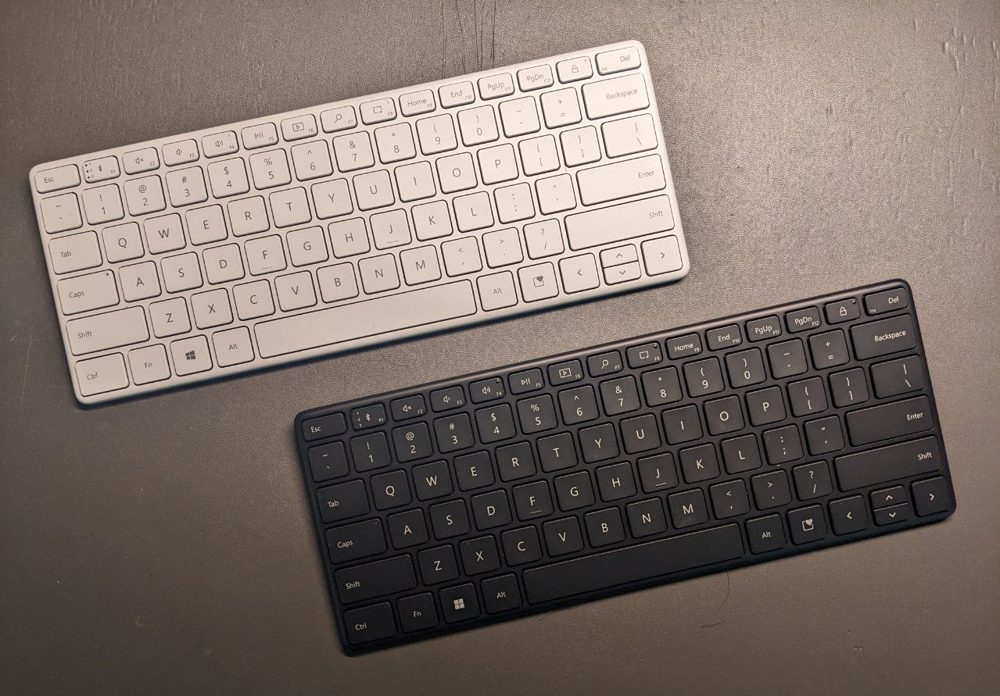

Table of Contents
1. 键盘全家桶
1.1. 个人观点: 机械键盘的尽头，一定是薄膜键盘（中的剪刀脚键盘）

这是 我个人心目中最顶级最完美的键盘，没有之一
1.2. 购买原因
满打满算，我自己可能快使用了11个月的GNU Emacs了。然后自从我将 capslock 改成 control 键之后，无名指按下 capslock 键的次数剧烈增加，以至于在使用Emacs的11个月后的现在，我的笔记本键盘的 capslock 已经开始变得不灵敏了，因此当天更换了机械键盘(轴体: hg红)使用，然而经历了机械键盘的四天下来的使用，我的手指的根部实在是疼到我难以描述，到后来的几天我几乎都要每隔半小时按摩2分钟，实在是受不了了。
于是就从机械键盘更换到了 上图的白色款键盘 使用，更换后瞬间爽了特别多！然而大概使用了一小时左右，按照我自己原来对笔记本的使用强度，很快啊！LAlt已经开始出现了点微微的油渍，实在是舍不得，因为 白色款是全新海外带盒装版的 带盒装的可以说是用一把少一把了吧，海鲜市场上带盒装的几乎都要比不带盒装的贵一倍。于是就萌生出了 再来一把 的想法。
为了区分以至于不会用岔，于是我便打算购入 不带盒装的黑色版 BYD 是真便宜，我自己原本以为 这么顶级的键盘，就算不带盒装的，也至少要卖个350吧？ 结果 这把键盘在2025年的时候仅仅只需要159 那不还赶快来一把吗？因为这真的是我心目中 最顶级、最完美 的键盘，的确 没有之一
1.3. 键盘优点
可拆卸的纽扣电池
可拆卸电池，比锂电池的好处是，永远不会担心锂电池胀气会把键盘撑破，也永远不用担心锂电池过度充电导致爆炸💥的风险。
同时纽扣电池用的是CR2032，在轻薄方面也只能是只有纽扣电池能做到这么薄了，在价格上来说据一些老哥所说即使是松下原装的CR2032，也只需要2.5元一枚，那么4枚也就是10块钱就完事了。
而且我自己于2023年末购入的那把 白色款键盘 它放到现在2025年3月，依然还有电…..我甚至想使用的时候，只需要把后面的开关打开就行了…..这是我自己用过的所有键盘里面，最持久的一位。
手感非常轻盈，甚至可以说比我个人的笔记本键盘手感还要好
我不知道该如何衡量一把键盘的手感哈，我先说一个 前提: 我不知道各位有没有使用过ROG的幻14那把键盘，那款笔记本的键盘手感我用下来的最大感受就是: 虽然好像键帽松垮了一点，但正是因为这松垮的感觉，却给了人一种非常软弹的手感。这种感觉一开始可能不算明显，但如果您对比过联想拯救者的话，应该能知道这种 “软弹” 是什么感觉。
然后，这把微软的designer-compact-keyboard键盘的感觉就是 使用起来会更加坚硬一点，手指在键帽上搓动的时候键帽根本不晃，没有那么松垮的感觉，但是依然保持着那份 “软弹” 感 就是这种感觉 (我自己只能尽可能地客观一点地描述，因为手感这种东西真的很难形容)
无线的、小小的
虽然大伙都说: 只要是蓝牙连接的话，延迟一定会非常大！ 这我之前也有同感，毕竟曾经买过一些不入流的工业时尚小产品，那个设备的蓝牙稳定性简直是难以描述。
但奇怪的是 这把designer-compact-keyboard键盘的蓝牙，却出奇地稳定！ 以至于我现在写完这篇文稿 我！真！的！一点延迟都没有感受到！ 我一度怀疑我是不是已经插上线了，但这把小小的键盘能被我随拿随放的行为，就打消了我这种顾虑。
将这把键盘拿起来，BYD，比我手机拿起来还要轻，我估计应该差不多有130-150克左右，我自己之前使用过的最轻的机械键盘也至少有600g啊，这种随拿随放的感觉，让我觉得我是不是拿了把巧克力🍫一样
Segoe UI字体
这把键盘的键帽的字体，用的全部都是 Segoe UI 如果您安装过古早版本的Windows 10的话，应该能在欢迎界面认识这种字体。这种字体给我自己的最初印象就是: 很有人文关怀的科技未来感
我个人认为哈，如果想做到 科技感 那真的是很简单的，只需要把所有的弯曲的线段全部改成直线就好了，完全不用考虑线条的弯曲程度。但如果 过于弯曲 就会有一种孩子儿童的 “kids” 的滑稽感，做过一些字体图标的设计的话，是会认识到其中是很难或者不容易将两者平衡好的。但 Segoe UI 这种字体，一开始我觉得没什么，好像本来就应该必须就是这样的，但越看越觉得 有一种恍惚感 就像 Windows 10快安装好后那个红绿蓝色块频繁闪动的那个界面给人的 “恍惚感” 一样 它就是有一种 “很有人文关怀的科技未来感” 细看这个字体，好像就是回到了 2015 年 Windows 10 刚出来的那个时候。
1.4. 键盘潜在缺点(也不一定是缺点，只是可提升空间)
类皮肤材质
类皮肤材质，使用久了之后一定会打油，所以我才说，我自己不敢这么暴力地嗯造原来那把白色款盒装键盘。
不过在剪刀脚键盘上，类皮肤材质一定是使用起来最广泛的，可能已经成熟的技术有它自己选型的原因吧。
如果能提供个性化键帽字符定制，那就更好了！
我一直有个疑问🤔，就是为什么在 剪刀脚键盘 里，没有键帽字符的个性化定制服务，即使是微软这种顶级养老大厂。GPT 给出的回答是：因为微软的产品一向以简洁、大气为缘，所以一向都是设计优雅的产品来使用。
但如果这把键盘当初还没停产时，官方能提供个性化键帽字符定制，那就更好了！那我宁愿再花多点钱，把键帽字符的 caps 更改成 control 那就一定是非常完美的了！
总之，这是 我个人心目中最顶级最完美的键盘，没有之一